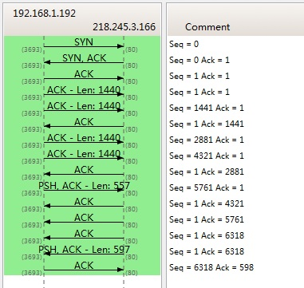

【转】TCP 的那些事儿（上）
TCP是一个巨复杂的协议，因为他要解决很多问题，而这些问题又带出了很多子问题和阴暗面。所以学习 TCP 本身是个比较痛苦的过程，但对于学习的过程却能让人有很多收获。关于 TCP 这个协议的细节，我还是推荐你去看 W.Richard Stevens 的《TCP/IP 详解 卷1：协议》（当然，你也可以去读一下 RFC793 以及后面 N 多的 RFC）。另外，本文我会使用英文术语，这样方便你通过这些英文关键词来查找相关的技术文档。
之所以想写这篇文章，目的有三个，
- 一个是想锻炼一下自己是否可以用简单的篇幅把这么复杂的TCP协议描清楚的能力。
- 另一个是觉得现在的好多程序员基本上不会认认真真地读本书，喜欢快餐文化，所以，希望这篇快餐文章可以让你对TCP这个古典技术有所了解，并能体会到软件设计中的种种难处。并且你可以从中有一些软件设计上的收获。
- 最重要的希望这些基础知识可以让你搞清很多以前一些似是而非的东西，并且你能意识到基础的重要。
所以，本文不会面面俱到，只是对 TCP 协议、算法和原理的科普。
我本来只想写一个篇幅的文章的，但是 TCP 真 TMD 的复杂，比 C++ 复杂多了，这 30 多年来，各种优化变种争论和修改。所以，写着写着就发现只有砍成两篇。
- 上篇中，主要向你介绍TCP协议的定义和丢包时的重传机制。
- 下篇中，重点介绍TCP的流迭、拥塞处理。
废话少说，首先，我们需要知道 TCP 在网络 OSI 的七层模型中的第四层 —— 传输层(Transport)，IP 在第三层 —— 网络层(Network)，ARP 在第二层 —— 数据链路层(Data Link)，在第二层上的数据，我们叫 Frame，在第三层上的数据叫 Packet，第四层的数据叫 Segment。
首先，我们需要知道，我们程序的数据首先会打到 TCP 的 Segment 中，然后 TCP 的 Segment 会打到 IP 的 Packet 中，然后再打到以太网 Ethernet 的 Frame 中，传到对端后，各个层解析自己的协议，然后把数据交给更高层的协议处理。
TCP头格式
接下来，我们来看一下 TCP 头的格式

你需要注意这么几点：
- TCP 的包是没有 IP 地址的，那是 IP 层上的事。但是有源端口和目标端口。
- 一个 TCP 连接需要四个元组来表示是同一个连接（
src_ip,src_port,dst_ip,dst_port）准确说是五元组，还有一个是协议。但因为这里只是说TCP协议，所以，这里我只说四元组。 - 注意上图中的四个非常重要的东西：
- Sequence Number 是包的序号，用来解决网络包乱序（reordering）问题。
- Acknowledgement Number 就是 ACK —— 用于确认收到，用来解决不丢包的问题。
- Window 又叫 Advertised-Window，也就是著名的滑动窗口（Sliding Window），用于解决流控的。
- TCP Flag ，也就是包的类型，主要是用于操控 TCP 的状态机的。
关于其它的东西，可以参看下面的图示

TCP的状态机
其实，网络上的传输是没有连接的，包括 TCP 也是一样的。而 TCP 所谓的“连接”，其实只不过是在通讯的双方维护一个“连接状态”，让它看上去好像有连接一样。所以，TCP 的状态变换是非常重要的。
下面是：“TCP 协议的状态机”（图片来源） 和 “TCP 建链接”、“TCP 断链接”、“传数据” 的对照图，我把两个图并排放在一起，这样方便在你对照着看。另外，下面这两个图非常非常的重要，你一定要记牢。（吐个槽：看到这样复杂的状态机，就知道这个协议有多复杂，复杂的东西总是有很多坑爹的事情，所以 TCP 协议其实也挺坑爹的）


很多人会问，为什么建链接要 3 次握手，断链接需要 4 次挥手？
- 对于建链接的 3 次握手，主要是要初始化 Sequence Number 的初始值。通信的双方要互相通知对方自己的初始化的 Sequence Number（缩写为 ISN：Inital Sequence Number） —— 所以叫 SYN，全称 Synchronize Sequence Numbers。也就上图中的 x 和 y。这个号要作为以后的数据通信的序号，以保证应用层接收到的数据不会因为网络上的传输的问题而乱序（TCP 会用这个序号来拼接数据）。
- 对于 4 次挥手，其实你仔细看是 2 次，因为 TCP 是全双工的，所以，发送方和接收方都需要 Fin 和 Ack。只不过，有一方是被动的，所以看上去就成了所谓的 4 次挥手。如果两边同时断连接，那就会就进入到 CLOSING 状态，然后到达T IME_WAIT 状态。下图是双方同时断连接的示意图（你同样可以对照着 TCP 状态机看）：

另外，有几个事情需要注意一下：
- 关于建连接时 SYN 超时。试想一下，如果 server 端接到了 client 发的 SYN 后回了 SYN-ACK 后 client 掉线了，server 端没有收到 client 回来的 ACK，那么，这个连接处于一个中间状态，即没成功，也没失败。于是，server 端如果在一定时间内没有收到的 TCP 会重发 SYN-ACK。在 Linux 下，默认重试次数为 5 次，重试的间隔时间从 1s 开始每次都翻售，5 次的重试时间间隔为 1s, 2s, 4s, 8s, 16s，总共 31s，第 5 次发出后还要等 32s 都知道第 5 次也超时了，所以，总共需要 1s + 2s + 4s+ 8s+ 16s + 32s = 2^6 - 1 = 63s，TCP 才会把断开这个连接。
- 关于 SYN Flood 攻击。一些恶意的人就为此制造了 SYN Flood 攻击 —— 给服务器发了一个 SYN 后，就下线了，于是服务器需要默认等 63s 才会断开连接，这样，攻击者就可以把服务器的 syn 连接的队列耗尽，让正常的连接请求不能处理。于是，Linux 下给了一个叫
tcp_syncookies的参数来应对这个事 —— 当 SYN 队列满了后，TCP 会通过源地址端口、目标地址端口和时间戳打造出一个特别的 Sequence Number 发回去（又叫 cookie），如果是攻击者则不会有响应，如果是正常连接，则会把这个 SYN Cookie 发回来，然后服务端可以通过 cookie 建连接（即使你不在 SYN 队列中）。请注意，请先千万别用tcp_syncookies来处理正常的大负载的连接的情况。因为，synccookies是妥协版的 TCP 协议，并不严谨。对于正常的请求，你应该调整三个 TCP 参数可供你选择，第一个是：tcp_synack_retries可以用他来减少重试次数；第二个是：tcp_max_syn_backlog，可以增大 SYN 连接数；第三个是：tcp_abort_on_overflow处理不过来干脆就直接拒绝连接了。 - 关于 ISN 的初始化。ISN 是不能 hard code 的，不然会出问题的 —— 比如：如果连接建好后始终用 1 来做 ISN，如果 client 发了 30 个 segment 过去，但是网络断了，于是 client 重连，又用了 1 做 ISN，但是之前连接的那些包到了，于是就被当成了新连接的包，此时，client 的 Sequence Number 可能是 3，而 Server 端认为 client 端的这个号是 30 了。全乱了。RFC793 中说，ISN 会和一个假的时钟绑在一起，这个时钟会在每4微秒对 ISN 做加一操作，直到超过 2^32，又从 0 开始。这样，一个ISN的周期大约是 4.55 个小时。因为，我们假设我们的 TCP Segment 在网络上的存活时间不会超过 Maximum Segment Lifetime（缩写为 MSL - Wikipedia 语条），所以，只要 MSL 的值小于 4.55 小时，那么，我们就不会重用到 ISN。
- 关于 MSL 和 TIME_WAIT。通过上面的 ISN 的描述，相信你也知道 MSL 是怎么来的了。我们注意到，在 TCP 的状态图中，从 TIME_WAIT 状态到 CLOSED 状态，有一个超时设置，这个超时设置是 2 * MSL（RFC793 定义了 MSL 为 2 分钟，Linux 设置成了 30s）为什么要这有 TIME_WAIT？为什么不直接给转成 CLOSED 状态呢？主要有两个原因：
- TIME_WAIT 确保有足够的时间让对端收到了 ACK，如果被动关闭的那方没有收到 Ack，就会触发被动端重发 Fin，一来一去正好 2 个MSL；
- 有足够的时间让这个连接不会跟后面的连接混在一起（你要知道，有些自做主张的路由器会缓存IP数据包，如果连接被重用了，那么这些延迟收到的包就有可能会跟新连接混在一起）。你可以看看这篇文章《TIME_WAIT and its design implications for protocols and scalable client server systems》
- 关于 TIME_WAIT 数量太多。从上面的描述我们可以知道，TIME_WAIT 是个很重要的状态，但是如果在大并发的短链接下，TIME_WAIT 就会太多，这也会消耗很多系统资源。只要搜一下，你就会发现，十有八九的处理方式都是教你设置两个参数，一个叫
tcp_tw_reuse，另一个叫tcp_tw_recycle的参数，这两个参数默认值都是被关闭的，后者 recyle 比前者 resue 更为激进，resue 要温柔一些。另外，如果使用tcp_tw_reuse，必需设置tcp_timestamps = 1，否则无效。这里，你一定要注意，打开这两个参数会有比较大的坑 —— 可能会让 TCP 连接出一些诡异的问题（因为如上述一样，如果不等待超时重用连接的话，新的连接可能会建不上。正如官方文档上说的一样“It should not be changed without advice/request of technical experts”）。- 关于
tcp_tw_reuse。官方文档上说tcp_tw_reuse加上tcp_timestamps（又叫 PAWS, for Protection Against Wrapped Sequence Numbers）可以保证协议的角度上的安全，但是你需要tcp_timestamps在两边都被打开（你可以读一下tcp_twsk_unique的源码 ）。我个人估计还是有一些场景会有问题。 - 关于
tcp_tw_recycle。如果是tcp_tw_recycle被打开了话，会假设对端开启了tcp_timestamps，然后会去比较时间戳，如果时间戳变大了，就可以重用。但是，如果对端是一个 NAT 网络的话（如：一个公司只用一个 IP 出公网）或是对端的 IP 被另一台重用了，这个事就复杂了。建链接的 SYN 可能就被直接丢掉了（你可能会看到 connection time out 的错误）（如果你想观摩一下 Linux 的内核代码，请参看源码tcp_timewait_state_process）。 - 关于
tcp_max_tw_buckets。这个是控制并发的 TIME_WAIT 的数量，默认值是 180000，如果超限，那么，系统会把多的给 destory 掉，然后在日志里打一个警告（如：time wait bucket table overflow），官网文档说这个参数是用来对抗 DDoS 攻击的。也说的默认值 180000 并不小。这个还是需要根据实际情况考虑。
- 关于
Again，使用
tcp_tw_reuse和tcp_tw_recycle来解决 TIME_WAIT 的问题是非常非常危险的，因为这两个参数违反了TCP协议（RFC 1122） 。
数据传输中的 Sequence Number
下图是我从 Wireshark 中截了个我在访问 coolshell.cn 时的有数据传输的图给你看一下，SeqNum 是怎么变的。（使用 Wireshark 菜单中的 Statistics -> Flow Graph…）

你可以看到，SeqNum 的增加是和传输的字节数相关的。上图中，三次握手后，来了两个 Len:1440 的包，而第二个包的 SeqNum 就成了 1441。然后第一个 ACK 回的是 1441，表示第一个 1440 收到了。
注意：如果你用 Wireshark 抓包程序看 3 次握手，你会发现 SeqNum 总是为0，不是这样的，Wireshark 为了显示更友好，使用了 Relative SeqNum —— 相对序号，你只要在右键菜单中的 protocol preference 中取消掉就可以看到“Absolute SeqNum”了。
TCP重传机制
TCP 要保证所有的数据包都可以到达，所以，必需要有重传机制。
注意，接收端给发送端的 Ack 确认只会确认最后一个连续的包，比如，发送端发了 1,2,3,4,5 一共五份数据，接收端收到了 1，2，于是回 ack 3，然后收到了 4（注意此时 3 没收到），此时的 TCP 会怎么办？我们要知道，因为正如前面所说的，SeqNum 和 Ack 是以字节数为单位，所以 ack 的时候，不能跳着确认，只能确认最大的连续收到的包，不然，发送端就以为之前的都收到了。
超时重传机制
一种是不回 ack，死等 3，当发送方发现收不到 3 的 ack 超时后，会重传 3。一旦接收方收到 3 后，会 ack 回 4 —— 意味着 3 和 4 都收到了。
但是，这种方式会有比较严重的问题，那就是因为要死等 3，所以会导致 4 和 5 即便已经收到了，而发送方也完全不知道发生了什么事，因为没有收到 Ack，所以，发送方可能会悲观地认为也丢了，所以有可能也会导致 4 和 5 的重传。
对此有两种选择：
- 一种是仅重传 timeout 的包。也就是第 3 份数据。
- 另一种是重传 timeout 后所有的数据，也就是第 3，4，5 这三份数据。
这两种方式有好也有不好。第一种会节省带宽，但是慢，第二种会快一点，但是会浪费带宽，也可能会有无用功。但总体来说都不好。因为都在等 timeout，timeout 可能会很长（在下篇会说 TCP 是怎么动态地计算出 timeout 的）
快速重传机制
于是，TCP 引入了一种叫 Fast Retransmit 的算法，不以时间驱动，而以数据驱动重传。也就是说，如果，包没有连续到达，就 ack 最后那个可能被丢了的包，如果发送方连续收到 3 次相同的 ack，就重传。Fast Retransmit 的好处是不用等 timeout 了再重传。
比如：如果发送方发出了 1，2，3，4，5 份数据，第一份先到送了，于是就 ack 回 2，结果 2 因为某些原因没收到，3 到达了，于是还是 ack 回 2，后面的 4 和 5 都到了，但是还是 ack 回 2，因为 2 还是没有收到，于是发送端收到了三个 ack = 2 的确认，知道了 2 还没有到，于是就马上重转 2。然后，接收端收到了 2，此时因为 3，4，5 都收到了，于是 ack 回 6。示意图如下：

Fast Retransmit 只解决了一个问题，就是 timeout 的问题，它依然面临一个艰难的选择，就是重转之前的一个还是重装所有的问题。对于上面的示例来说，是重传 #2 呢还是重传 #2，#3，#4，#5 呢？因为发送端并不清楚这连续的 3 个 ack(2) 是谁传回来的？也许发送端发了 20 份数据，是 #6，#10，#20 传来的呢。这样，发送端很有可能要重传从 2 到 20 的这堆数据（这就是某些 TCP 的实际的实现）。可见，这是一把双刃剑。
SACK 方法
另外一种更好的方式叫：Selective Acknowledgment (SACK)（参看 RFC 2018），这种方式需要在 TCP 头里加一个 SACK 的东西，ACK 还是 Fast Retransmit 的 ACK，SACK 则是汇报收到的数据碎版。参看下图：

这样，在发送端就可以根据回传的 SACK 来知道哪些数据到了，哪些没有到。于是就优化了 Fast Retransmit 的算法。当然，这个协议需要两边都支持。在 Linux 下，可以通过 tcp_sack 参数打开这个功能（Linux 2.4 后默认打开）。
这里还需要注意一个问题 —— 接收方 Reneging，所谓 Reneging 的意思就是接收方有权把已经报给发送端 SACK 里的数据给丢了。这样干是不被鼓励的，因为这个事会把问题复杂化了，但是，接收方这么做可能会有些极端情况，比如要把内存给别的更重要的东西。所以，发送方也不能完全依赖 SACK，还是要依赖 ACK，并维护 Time-Out，如果后续的 ACK 没有增长，那么还是要把 SACK 的东西重传，另外，接收端这边永远不能把 SACK 的包标记为 Ack。
注意：SACK 会消费发送方的资源，试想，如果一个攻击者给数据发送方发一堆 SACK 的选项，这会导致发送方开始要重传甚至遍历已经发出的数据，这会消耗很多发送端的资源。详细的东西请参看《TCP SACK的性能权衡》
Duplicate SACK – 重复收到数据的问题
Duplicate SACK 又称 D-SACK，其主要使用了 SACK 来告诉发送方有哪些数据被重复接收了。RFC-2833 里有详细描述和示例。下面举几个例子（来源于 RFC-2833）
D-SACK使用了SACK的第一个段来做标志，
- 如果 SACK 的第一个段的范围被 ACK 所覆盖，那么就是 D-SACK
- 如果 SACK 的第一个段的范围被 SACK 的第二个段覆盖，那么就是 D-SACK
示例一：ACK 丢包
下面的示例中，丢了两个 ACK，所以，发送端重传了第一个数据包（3000 - 3499），于是接收端发现重复收到，于是回了一个 SACK = 3000 - 3500，因为 ACK 都到了 4000 意味着收到了 4000 之前的所有数据，所以这个 SACK 就是 D-SACK —— 旨在告诉发送端我收到了重复的数据，而且我们的发送端还知道，数据包没有丢，丢的是 ACK 包。
Transmitted Received ACK Sent |
示例二：网络延误
下面的示例中，网络包（1000 - 1499）被网络给延误了，导致发送方没有收到 ACK，而后面到达的三个包触发了“Fast Retransmit 算法”，所以重传，但重传时，被延误的包又到了，所以，回了一个 SACK = 1000 - 1500，因为 ACK 已到了 3000，所以，这个 SACK 是 D-SACK —— 标识收到了重复的包。
这个案例下，发送端知道之前因为“Fast Retransmit 算法”触发的重传不是因为发出去的包丢了，也不是因为回应的 ACK 包丢了，而是因为网络延时了。
Transmitted Received ACK Sent |
可见，引入了 D-SACK，有这么几个好处：
- 可以让发送方知道，是发出去的包丢了，还是回来的 ACK 包丢了。
- 是不是自己的 timeout 太小了，导致重传。
- 网络上出现了先发的包后到的情况（又称 reordering）
- 网络上是不是把我的数据包给复制了。
知道这些东西可以很好得帮助TCP了解网络情况，从而可以更好的做网络上的流控。
Linux 下的 tcp_dsack 参数用于开启这个功能（Linux 2.4 后默认打开）
好了，上篇就到这里结束了。如果你觉得我写得还比较浅显易懂，那么，欢迎移步看下篇《TCP的那些事（下）》
[原文链接：http://coolshell.cn/articles/11564.html]